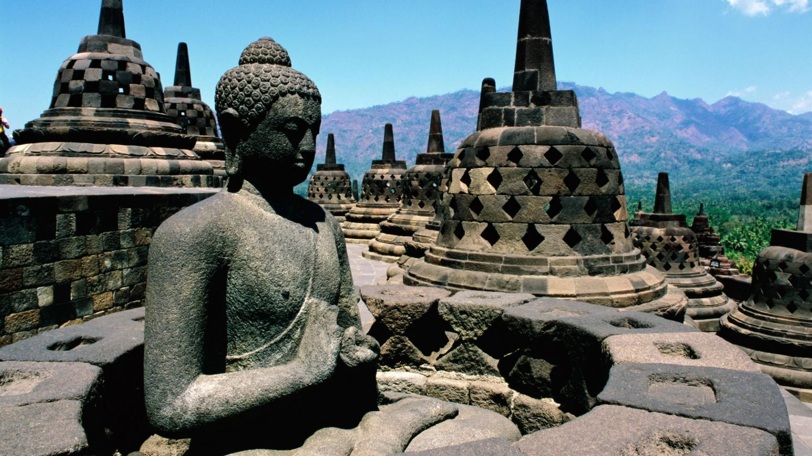
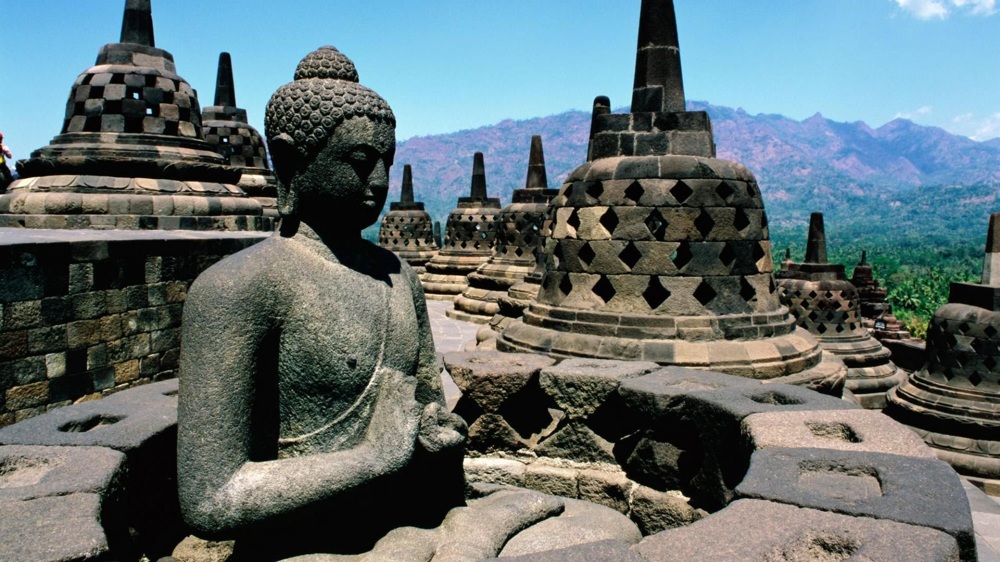

Candi Borobudur
Candi Borobudur adalah salah satu candi Buddha terbesar di dunia dan menjadi salah satu situs warisan dunia UNESCO.
Candi Borobudur adalah salah satu candi Buddha terbesar di dunia dan menjadi salah satu situs warisan dunia UNESCO.
Keraton Yogyakarta adalah istana resmi Kesultanan Ngayogyakarta Hadiningrat dan menjadi pusat kebudayaan dan sejarah Jogja.